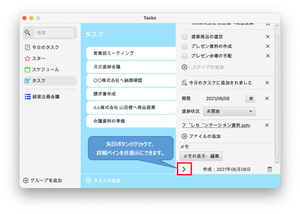

Document Site
詳細ペインの機能
Tasksの詳細ペインでは以下の機能を実行できます。
- タスクタイトル編集
- スター追加
- ステップの追加
- 今日のタスクに追加
- 期限設定
- 進捗状況
- ファイルの追加
- メモ編集
- 詳細ペイン非表示
- タスク削除
このページでは、詳細ペインの使い方をご説明していきます。
タスクタイトル編集
詳細ペインの「タスク名（タイトル）」フィールドを編集することができます。
編集結果は即時に保存されます。
スター追加
詳細ペインのスターボタンのクリックで、重要なタスクをスタータスクとしてリスト表示できます。
スターボタンのクリックで、スターを追加したタスクからスターを外すこともできます。
ステップの追加
詳細ペインの「ステップ追加」で、タスクの詳細な作業を登録することができます。
ラジオボタンの押下で、ステップが完了となります。（完了を戻すこともできます）
バツボタンのクリックで、ステップを削除することができます。
今日のタスクに追加
詳細ペインの「今日のタスクに追加」で、今日取り組むべきタスクを今日のタスクとしてリスト表示できます。
バツボタンの押下で、今日のタスクから削除することもできます。
期限設定
詳細ペインの「期限」で、タスクの期限を設定することができます。
バツボタンの押下で、期限を削除することもできます。
進捗状況
詳細ペインの「進捗状況」で、タスクの進捗状況を設定することができます。
タスクの状況の応じて5種類のステータスを設定することができます。
ファイルの追加
詳細ペインの「進捗状況」で、タスクの進捗状況を設定することができます。
タスクの状況の応じて5種類のステータスを設定することができます。
メモ編集
詳細ペインの「メモの表示・編集」で、タスクのメモを記録することができます。
メモの編集は、編集と同時に保存されます。
詳細ペイン非表示
詳細ペインの矢印ボタンのクリックで、詳細ペインを非表示にすることができます。
タスク削除
詳細ペインのゴミ箱ボタンのクリックで、タスクを削除することができます。